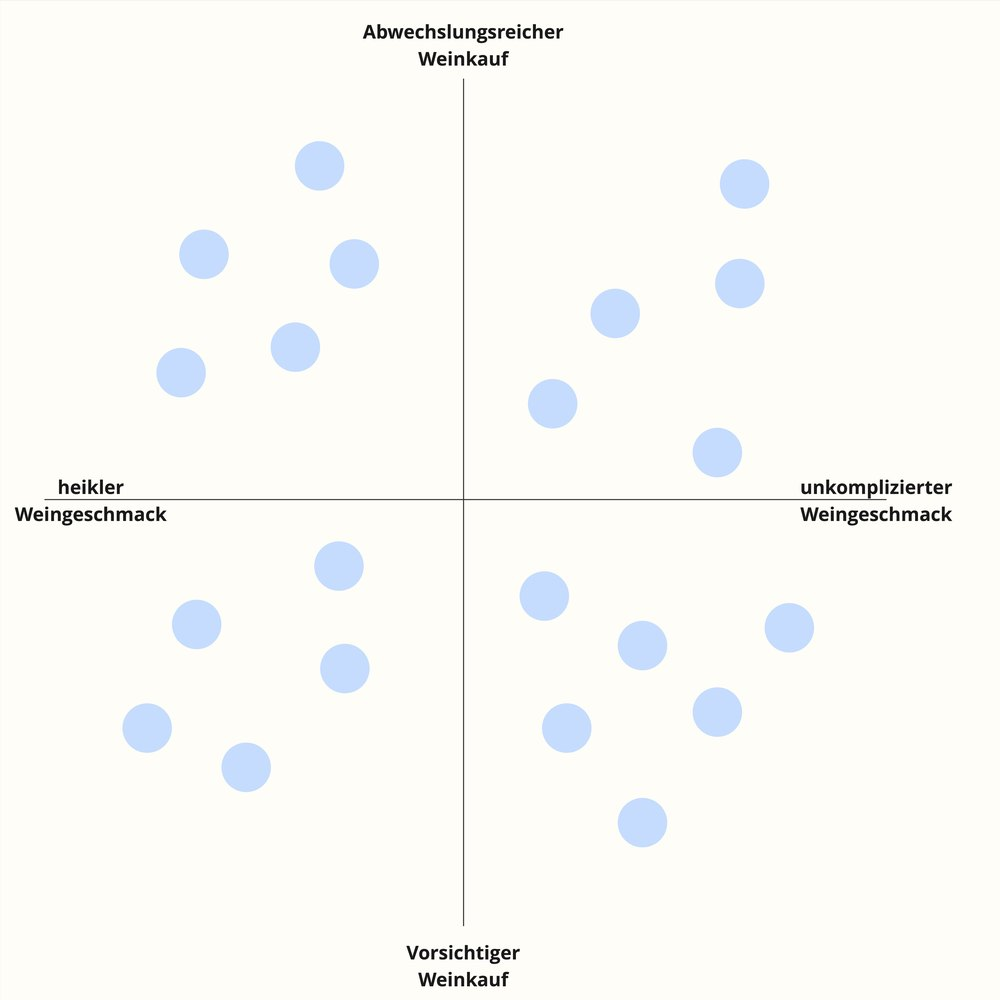
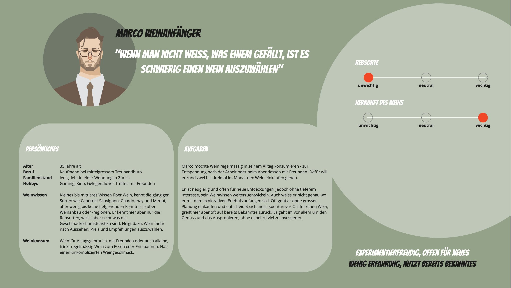
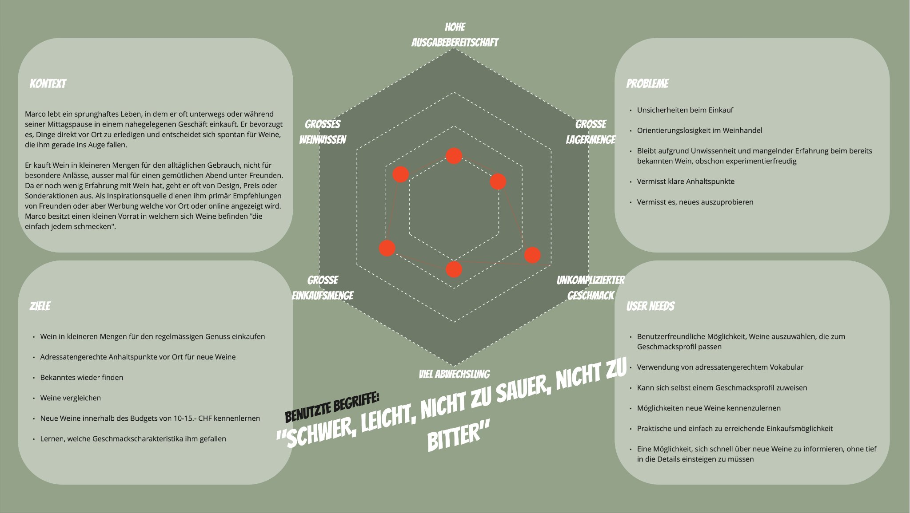

Generative Forschung Weinkonsum
Executive Summary
Das Wissen über die Bedürfnisse der Weinkundschaft war beim Denner Weinshop zunächst sehr begrenzt. Es war unklar, welche unterschiedlichen Weinkund:innen es überhaupt gibt und wie sie ihre Kaufentscheidungen treffen.
Eine generative Research-Studie mit qualitativen und quantitativen Methoden brachte mehr Klarheit. Sie half dem Team dabei, Strategien zu entwickeln, um den Käuferkreis im Weinsegment gezielt zu erweitern und die Bedürfnisse der Kund:innen besser zu erfüllen.
Meine Rolle:
- Projektleitung
- User-Research Lead
Meine Aufgaben:
- Forschungsfragen
- Interviews planen und moderieren
- Daten in Dovetail codieren und clustern
- Opportunity Areas aufzeigen
- Quantitative Umfrage zur Validierung aufsetzen
- Personas ausarbeiten
Angewandte Methoden:
DISCOVER
Ausgangslage & Problemdefinition
Folgende Forschungsfragen standen im Zentrum:
- Welches sind die wichtigsten Wein-Personas für den Denner-Weinshop?
- Wie treffen Kund:innen den Entscheid für einen bestimmten Wein?
Discover & Explore
Research-Phase
In der ersten Iteration führte ich gemeinsam mit dem Team 21 halbstrukturierte Video-Interviews durch. Die Teilnehmenden wurden über einen Screener rekrutiert. Anschliessend wurden die Interviews mit KI transkribiert sowie in Dovetail codiert und kategorisiert.
Durch die Synthese konnten vier zentrale Verhaltensmuster identifiziert werden:
- Heikler Geschmack bei gleichzeitig abwechslungsreichem Weinkauf
- Unkomplizierter Geschmack bei abwechslungsreichem Weinkauf
- Heikler Geschmack bei vorsichtigem Weinkauf
- Unkomplizierter Geschmack bei vorsichtigem Weinkauf

Ergebnisse
Personas
In einer zweiten Iteration wurde eine quantitative Umfrage durchgeführt, um die qualitativen Erkenntnisse zu validieren. Die Antworten wurden den Personas zugeordnet und statistisch ausgewertet.
- Marco – Weinanfänger
- Markus – Weinkenner
- Sophie – Anlass-Trinkerin
- Regula – Alltag-Trinkerin
Daraus erörterte ich mit dem Team Opportunity Areas.

